Print a one-trail Sandstone Sonnets flyer to share.
Pick a trail, then tap Print this flyer (or choose Save as PDF in the print window). Each flyer has that trail’s poems with the first two hints, and a QR code that leads to the rest on the website. It prints on letter paper; double-sided works well.
Short, fun poems about rock formations on the trails around Fruita, Colorado. A scavenger hunt for hikers.
D4 · Devil's Canyon · Fruita
Photo hints, answers and 11 more poems on 6 more trails at sandstonesonnets.com
How to play: each poem describes a rock formation along this trail, numbered in the order you’ll reach it. Read a poem, then see if you can find it. Stuck? Try the hints beside it.
Tread lightly:
Please remember to always stay on marked trails while you search. The dark, crusty cryptobiotic soil around Fruita is alive, and a single footprint can take decades to heal.
D4 #1 Fruita's Dapper Duck
Near Fruita stands a rock so odd,
A sandstone duck that gives a nod.
With jaunty hat upon its crown,
It seems the best-dressed bird in town.
This fashion-forward desert friend,
Makes travelers pause around the bend.
“Is that a duck? With hat so grand?”
Kids shout with glee and wave a hand.
The Colorado winds may blow,
But duckie’s hat won’t ever go.
It sits there firm through hail and rain,
A rocky, regal hat domain.
Some say he guards the trail each day,
A sandstone scout along the way.
While other ducks splash and glide,
This one just watches, brims with pride.
And everyone who happens by,
Can’t help but grin and look up high.
For nestled in the desert flat,
Is Fruita’s duck, the one in the hat.
Hint 1
Somewhere on the D4 trail, you’ll find a rock shaped like a duck wearing a hat.
Hint 2
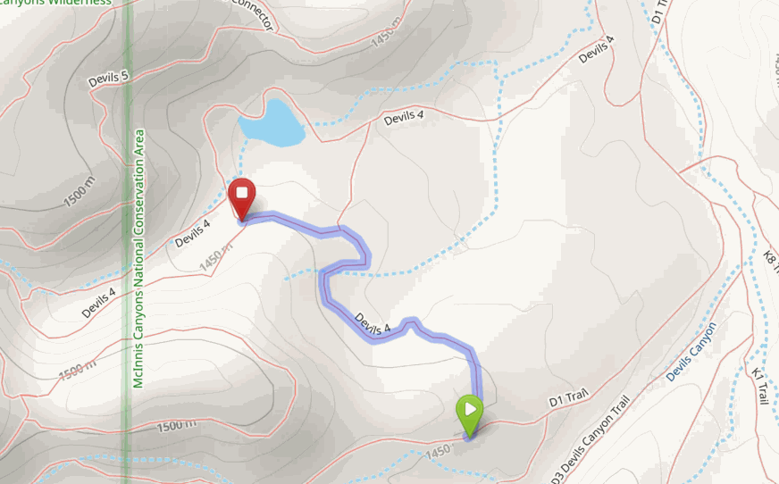
This feature can be found somewhere along the section of trail highlighted in purple above.
D4 #2 The Canyon's Secret Grin
If you search the canyon wall,
A cheeky smile grins down at all.
Red rock carved by wind and time,
Sharing nature’s favorite rhyme.
Green trees giggle from above,
Junipers whisper tales of love.
While hikers stop and point with glee:
“Look! The canyon’s smiling at me!”
This sandstone jester never frowns,
Just grins at all the desert towns.
A million-year-old happy face,
That makes D4 such a lovely place!
So if you’re walking Fruita’s trails
And need a laugh when courage fails,
Just look up at that crimson wall,
The canyon’s smiling after all!
Hint 1
There is a place somewhere on the D4 trail where it looks as though a big smile was carved into the sandstone.
Hint 2
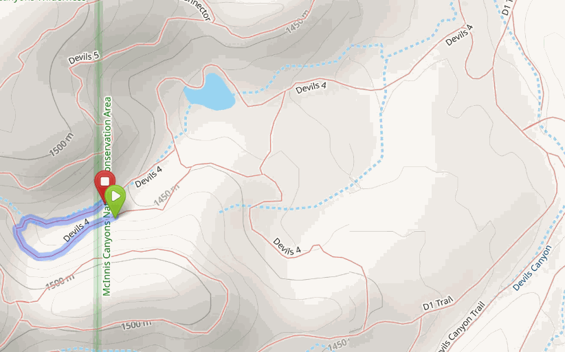
This feature is located in the loop section of the D4 trail. It can be found somewhere in the area highlighted in purple above.
D4 #3 Red Rock Fury
Perched in the desert, proud and absurd,
A sandstone cliff — an Angry Bird.
Its beak juts sharp, its brow is stern,
With a temper that’s quiet but starting to churn.
The wind plays slingshot, the clouds take aim,
But this rock just chuckles, immune to the game.
Forever frozen in feathery guise,
A grumpy guardian under bluebird skies.
Lizards parade by its scowling face,
Whispering tales of this lofty place.
Tourists snap photos, delighted to find,
A relic of pixels in stone redefined.
And when twilight paints the canyon red,
The Angry Bird will live on in your head.
A game once played on a glowing screen,
Now etched by time in a desert scene.
Hint 1
Somewhere on the D4 trail, you’ll find a rock that looks like a bird from the angry birds video game.
Hint 2
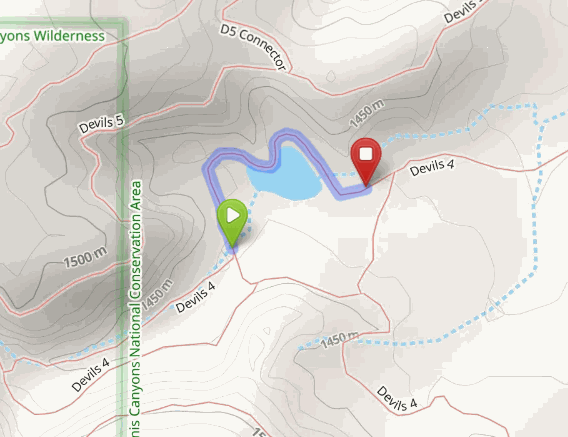
This feature can be found somewhere along the section of trail highlighted in purple above.
Sandstone Sonnets
Short, fun poems about rock formations on the trails around Fruita, Colorado. A scavenger hunt for hikers.
F1 · Flume Canyon · Fruita
Photo hints, answers and 11 more poems on 6 more trails at sandstonesonnets.com
How to play: each poem describes a rock formation along this trail, numbered in the order you’ll reach it. Read a poem, then see if you can find it. Stuck? Try the hints beside it.
Tread lightly:
Please remember to always stay on marked trails while you search. The dark, crusty cryptobiotic soil around Fruita is alive, and a single footprint can take decades to heal.
F1 #1 Desert Shipwreck
As you venture where the cliffs stand by,
A breaching whale will catch your eye.
Its sandstone flukes once crashed the sea,
And wrecked a ship for all to see.
The vessel lingered, ghostly drawn,
Its sails were torn, its crew long gone.
Yet its rocky shell still remains,
A sandstone hull upon the plain.
The whale looks proud, a trickster bold,
A million years of tales retold.
While desert winds still sing a song:
The whale’s been laughing all along.
So if you stroll these rugged lands,
With dust and wonder in your hands,
Look close, the tale is clear:
A whale sunk that ship right here!
Hint 1
You are searching for two large rocks. One of them looks like a whale breaching out of the water. Behind it, you’ll find another rock that looks like a sinking ship.
Hint 2
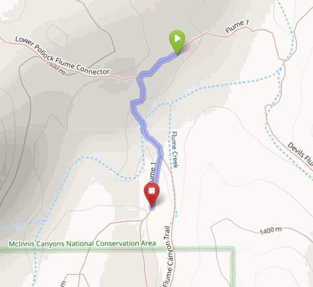
This feature is visible from the F1 trail. It can be found somewhere in the area highlighted in purple above.
F1 #2 Patina Portrait
Look across the canyon face,
A weathered man holds his place.
With hair of brown and moustache too,
A coat of varnish, earthen hue.
No brush has touched this rocky wall,
Yet nature’s paint outshines them all.
An Old West portrait formed in desert glaze,
Was he a sheriff? Merchant? Who’s to say?
His eyes are gone, worn smooth by time,
Yet still he keeps a watch sublime.
Flume canyon rests beneath his gaze,
An old prospector from those bygone days?
So give a nod as you pass on by,
This stoic stranger won’t reply.
But desert varnish keeps him near,
A patinaed figure from yesteryear.
Hint 1
Somewhere on the F1 trail, there is varnish on the sandstone that looks a little like a portrait of someone from the Old West.
Hint 2
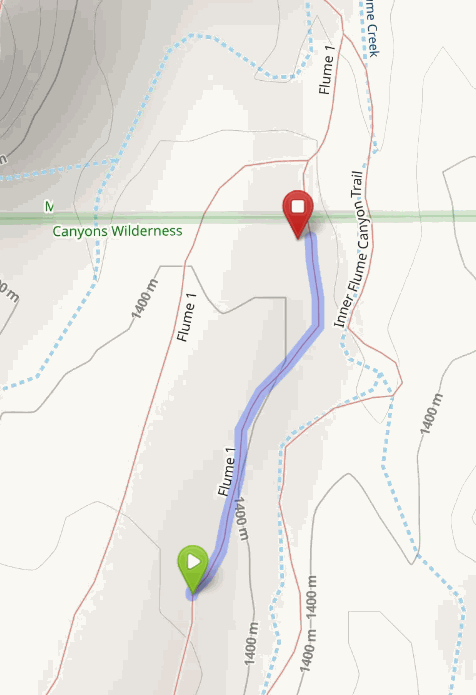
This feature is visible from the F1 trail. It can be found somewhere in the area highlighted in purple above.
F1 #3 Guardian of the Flume
If you wander where the waters run,
Past sandstone walls and desert sun,
You’ll find a beast both strange and sly,
With wooden jaws that snap the sky.
Its tail is curled beneath itself,
A driftwood gator perched on its shelf.
A weathered relic, bleached and white,
Keeping Inner Flume within its sight.
Hikers stop with wide-eyed cheer:
“Look! A critter’s waiting here!”
Carved by flood and nature’s play,
Its roar scares only the dust away.
So if you roam above the Flume’s embrace,
And stumble on this creature’s place,
Just wave and laugh, don’t be afraid,
Of the timbered ghost the floods have stayed.
Hint 1
Somewhere on the F1 trail, you can look across Inner Flume and see a creature tucked into the canyon wall.
Hint 2
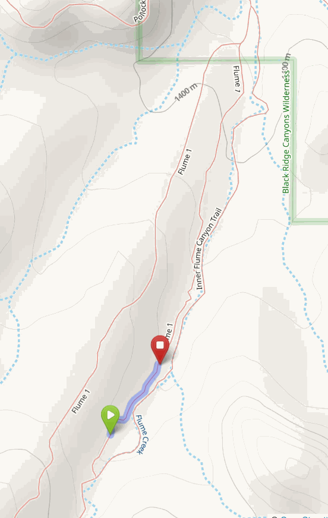
This feature is visible from the F1 trail. It can be found somewhere in the area highlighted in purple above.
Sandstone Sonnets
Short, fun poems about rock formations on the trails around Fruita, Colorado. A scavenger hunt for hikers.
K1 · Kodel's Canyon · Fruita
Photo hints, answers and 13 more poems on 6 more trails at sandstonesonnets.com
How to play: each poem describes a rock formation along this trail, numbered in the order you’ll reach it. Read a poem, then see if you can find it. Stuck? Try the hints beside it.
Tread lightly:
Please remember to always stay on marked trails while you search. The dark, crusty cryptobiotic soil around Fruita is alive, and a single footprint can take decades to heal.
K1 #1 Dragon Dreams
A thousand-foot dreamer in ribbons of red,
On a pillow of desert, he’s resting his head.
His wings are tucked tight in a neat stony fold,
A secret in sandstone, slowly being told.
As you walk by his side, it’s hard not to gape,
At the beast who’s been waiting to make his escape.
Only half his bulk has emerged from the ground,
He slumbers in silence, heavy and profound.
His snout points uphill, aimed straight for the park,
Wait, did his eyelid just flicker…maybe spark?
He’s counting on raindrops and frost-wedging art,
To loosen the earth from his lower-half part.
He needs just a bit more erosion to show,
The rest of his tail, then he’s ready to go.
But for now he’s content to dream in the sun,
A dragon whose waiting has only begun.
Hint 1
Somewhere on the K1 trail, you’ll find a large rock formation shaped like a dragon who is laying on the ground fast asleep.
Hint 2
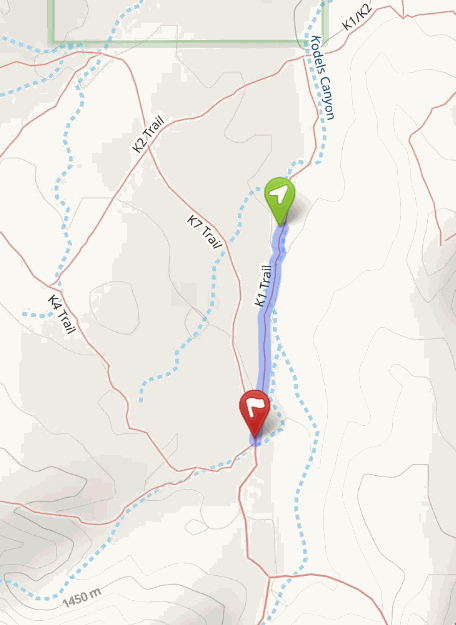
This feature can be found somewhere along the section of trail highlighted in purple above.
Sandstone Sonnets
Short, fun poems about rock formations on the trails around Fruita, Colorado. A scavenger hunt for hikers.
K12 · Kodel's Canyon · Fruita
Photo hints, answers and 13 more poems on 6 more trails at sandstonesonnets.com
How to play: each poem describes a rock formation along this trail, numbered in the order you’ll reach it. Read a poem, then see if you can find it. Stuck? Try the hints beside it.
Tread lightly:
Please remember to always stay on marked trails while you search. The dark, crusty cryptobiotic soil around Fruita is alive, and a single footprint can take decades to heal.
K12 #1 The Timeless Lookout
Peeking across the K12 trail,
Two wide eyes tell a tale.
Hikers pause, marveling at the sight,
Round guardians in the morning light.
Sometimes they sparkle, sometimes they wink,
As if to say, “Pause here, take a drink.”
They stare down the wind, chuckle at the dust,
And remind every traveler: adventure is a must.
They’ve seen foxes tiptoe, hawks take flight,
Storm clouds gather and fade from sight.
On occasion, rattlesnakes slither by,
And coyote songs ring to the sky.
Through seasons’ dance and shifting sand,
They’ve watched the canyon, proud and grand.
The eyes don’t blink, they only see,
All the stories of what was and what will be.
Hint 1
Somewhere on the K12 trail, you’ll find a place where it looks like two eyes were carved into the sandstone.
Hint 2
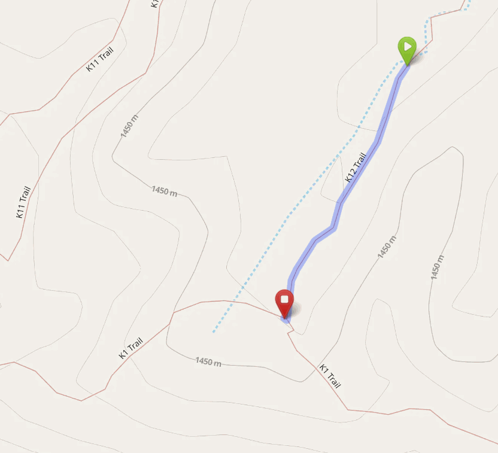
This feature can be found somewhere along the section of trail highlighted in purple above.
Sandstone Sonnets
Short, fun poems about rock formations on the trails around Fruita, Colorado. A scavenger hunt for hikers.
Monument Canyon · National Monument · Fruita
Photo hints, answers and 13 more poems on 6 more trails at sandstonesonnets.com
How to play: each poem describes a rock formation along this trail, numbered in the order you’ll reach it. Read a poem, then see if you can find it. Stuck? Try the hints beside it.
Tread lightly:
Please remember to always stay on marked trails while you search. The dark, crusty cryptobiotic soil around Fruita is alive, and a single footprint can take decades to heal.
Monument Canyon #1 The Elephant Seal
Beside the path of Monument fame,
A curious rock has earned its name.
Big snout skyward, mouth open wide,
Yikes! An elephant seal — better hide!
Perhaps it’s mid-yawn, or maybe mid-story,
Sharing epics of its former glory.
Or maybe, I have a hunch,
That it’s sizing up a hiker’s lunch.
Some say it’s telling tales,
Of ancient seas and fossilized whales.
Others swear they’ve heard it snore,
When canyon winds begin to roar.
So if you pass and hear a sound,
A gravelly groan from rocky ground,
Just tip your hat and keep your stride,
In case that seal has an appetite!
Hint 1
You’ll find a rock next to the trail that looks like the profile of an elephant seal with its mouth wide open.
Hint 2
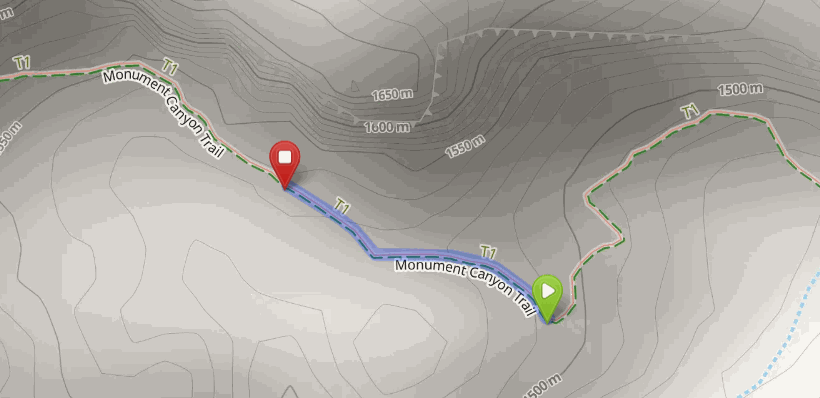
You’ll find this rock formation along the Monument Canyon trail. It is located somewhere in the area highlighted in purple above.
Sandstone Sonnets
Short, fun poems about rock formations on the trails around Fruita, Colorado. A scavenger hunt for hikers.
P1 · Pollock Canyon · Fruita
Photo hints, answers and 13 more poems on 6 more trails at sandstonesonnets.com
How to play: each poem describes a rock formation along this trail, numbered in the order you’ll reach it. Read a poem, then see if you can find it. Stuck? Try the hints beside it.
Tread lightly:
Please remember to always stay on marked trails while you search. The dark, crusty cryptobiotic soil around Fruita is alive, and a single footprint can take decades to heal.
P1 #1 Pollock's Backside
Up on the bench where the canyon runs wide,
A plump pair of cheeks tops the trail’s west side.
No legs and no torso, no arms to embrace,
Just two solid glutes, holding firm in their place.
No matter the season, no matter the phase,
It’s always a full moon up Pollock a ways.
It looks like whoever got stuck on that rim,
Never missed leg day, didn’t skip the gym.
So hike clockwise along with your eyes on the prize,
Hold a steady watch outward for nature’s surprise.
Continue and you’ll find, just as the trail turns,
The palest backside that never quite burns.
Beneath the junipers, unbothered and bare,
Without any shorts, or discreet underwear.
These beautiful buns that have no need to hide,
Just waiting for you on Pollock’s backside.
Hint 1
Somewhere on the P1 trail, you’ll find a rock formation that looks like two plump butt cheeks.
Hint 2
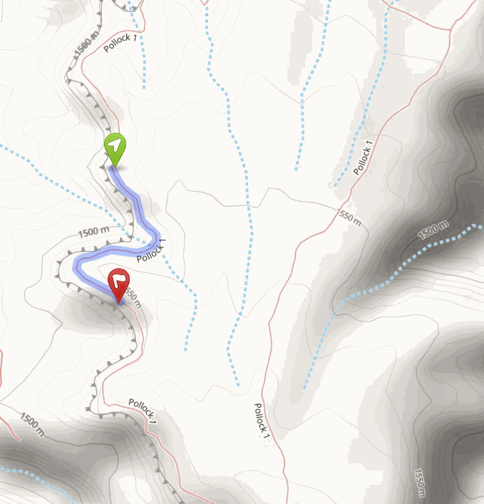
This feature can be found somewhere along the section of trail highlighted in purple above. Click the map for an interactive view.
Sandstone Sonnets
Short, fun poems about rock formations on the trails around Fruita, Colorado. A scavenger hunt for hikers.
R1 · Rattlesnake Arches · Fruita
Photo hints, answers and 10 more poems on 6 more trails at sandstonesonnets.com
How to play: each poem describes a rock formation along this trail, numbered in the order you’ll reach it. Read a poem, then see if you can find it. Stuck? Try the hints beside it.
Tread lightly:
Please remember to always stay on marked trails while you search. The dark, crusty cryptobiotic soil around Fruita is alive, and a single footprint can take decades to heal.
R1 #1 The Sentinel
There upon the cliff, a figure appears,
Watching over the desert through millions of years.
Its body is dark, like a shade or a shroud,
Silent and stoic, distinct and proud.
But look at that neck! It’s a ring made of light,
Pure snowy stone shining dazzlingly bright.
A collar of white, like a scarf she has worn,
Since the stars of the galaxy were very first born.
She scans for a meal with a hunter’s glare,
But with a tummy of rock she eats only air.
She wants to take off and to soar in the view,
Stuck to the wall, nothing much she can do.
So give her a wave as you round the bend,
As always, she’ll be busy chasing the wind.
The bald eagle bird with the ruff of the snow,
Is stone-still but putting on quite a show.
Hint 1
Somewhere on the R1 trail, you’ll find a rock shaped like an eagle, standing tall above the canyon below.
Hint 2
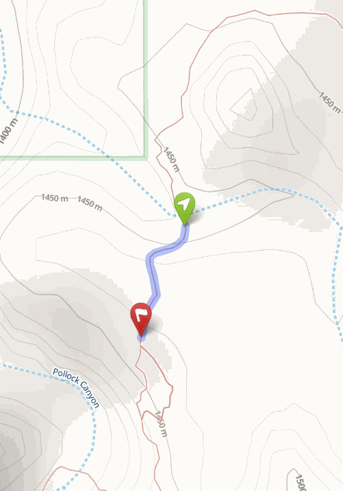
This feature can be found somewhere along the section of trail highlighted in purple above.
R1 #2 Kissy Face Emoji
Along the trail’s winding way,
A pucker stops, brightens your day,
With lips pursed tight in stone surprise,
A smooch that hangs before your eyes.
No artist hand or potter’s clay,
A kissy-face built the R1 way.
From grains of rock and wind-filled days,
Left out here for us to praise.
Accidental emoji from ancient art,
Still stole my playful desert heart.
So blow a kiss, back to the sky,
And let your happy spirits fly.
Hint 1
Look closely and you’ll find something that resembles a kissy-face emoji near the R1 trail.
Hint 2
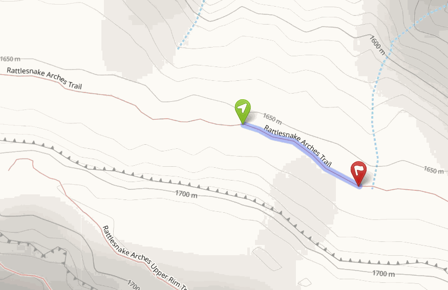
This feature can be found somewhere along the section of trail highlighted in purple above.
R1 #3 The Sneering Snail
As the R1 trail begins to bend,
After all the steepest climbing ends,
There, upon a level seat,
A grumpy snail takes the heat.
His shell is pale, a sandy cream,
A sun-bleached, prehistoric gleam.
But look into his rocky face,
He seems to loathe this quiet place.
With narrowed eyes and stony glare,
He watches hikers unaware.
Perhaps he’s cross because he’s stuck,
With prehistoric, sluggish luck.
He wished to reach the canyon floor,
A million years ago or more.
But mid-way down he took a nap,
And fell into a sandstone trap.
So if you pass his craggy seat,
Be sure to move with nimble feet.
For though he’s still as still can be,
He’s quite a cranky sight to see.
Hint 1
A rock that looks like a snail who is glaring out at the bench below with narrowed eyes.
Hint 2
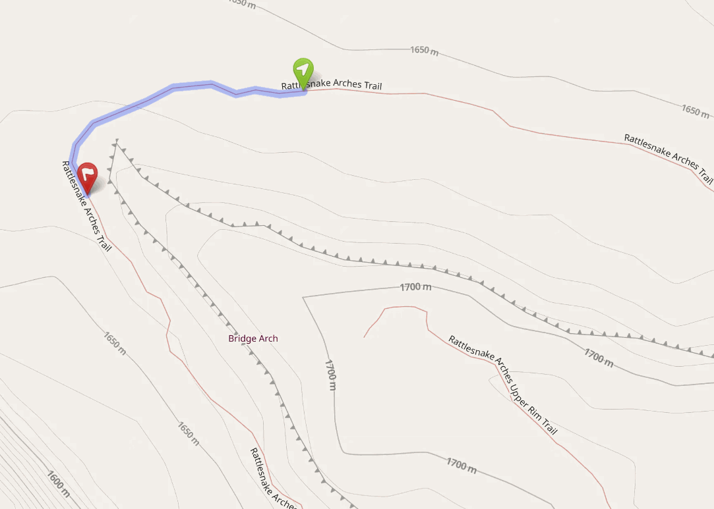
This feature can be found somewhere along the section of trail highlighted in purple above.
R1 #4 Cobra Canyon
Near where the arches stretch,
And canyon breezes softly fetch,
You’ll see a shape that’s quite a sight,
Bathed in desert golden light.
A cobra rising from the ground,
The finest statue to be found.
It fans a hood of dusty red,
And rears its heavy, stony head.
It looks as if it might attack,
With eyes that watch the canyon track.
But do not run in fear or fright,
It hasn’t moved in all of light.
For this is just a rock, you see,
No venom for you or for me.
It has no fangs, no tail, no tongue,
Just ancient grains of sand, unsung.
Hint 1
Above Rattlesnake Canyon, you’ll find a rock shaped like a cobra with its head raised high.
Hint 2
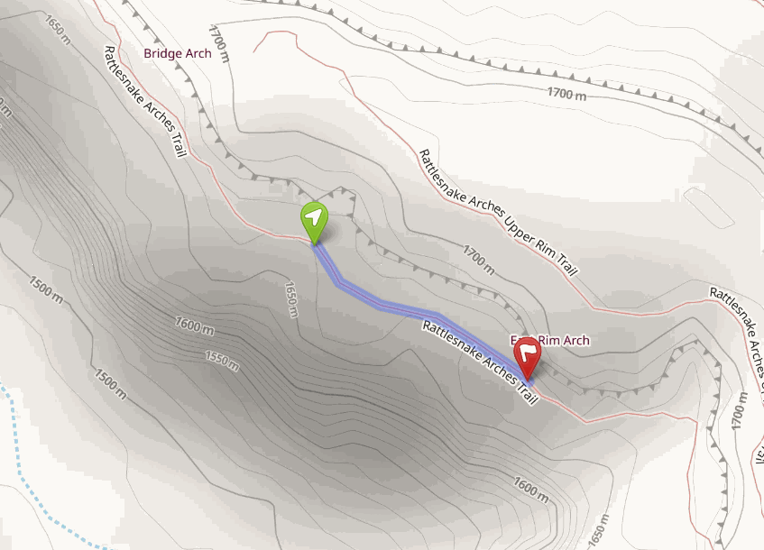
This feature can be found somewhere along the section of trail highlighted in purple above.